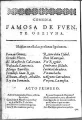
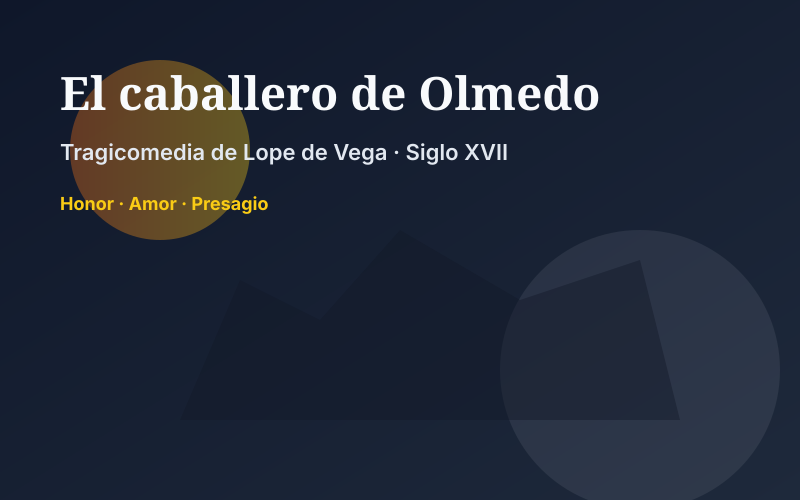
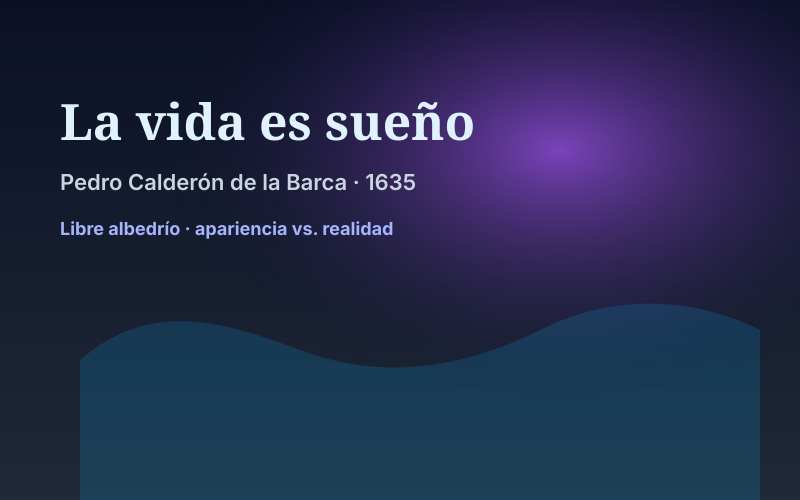
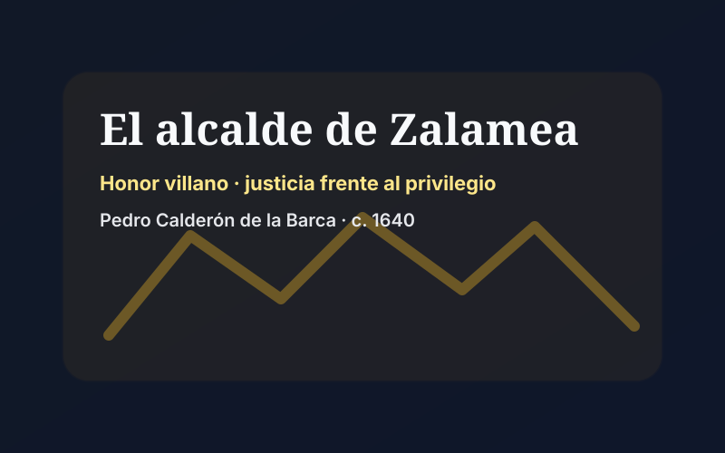
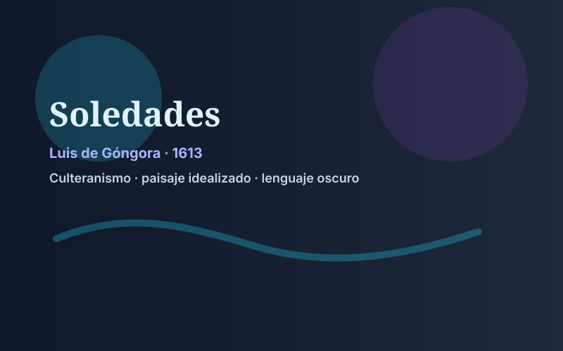
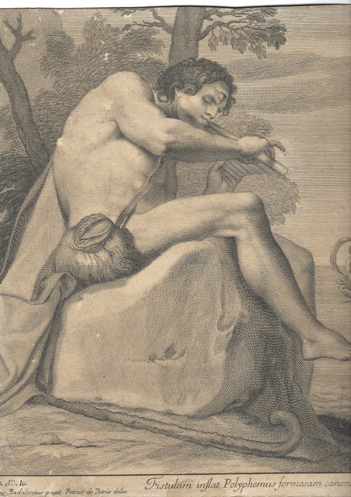
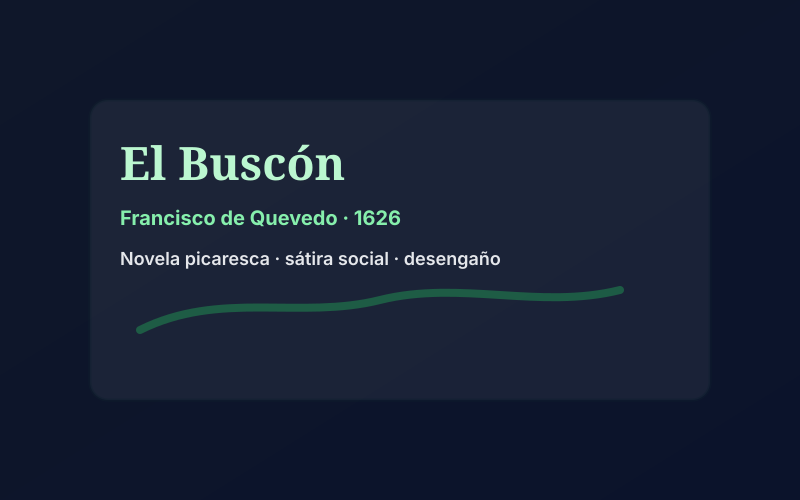
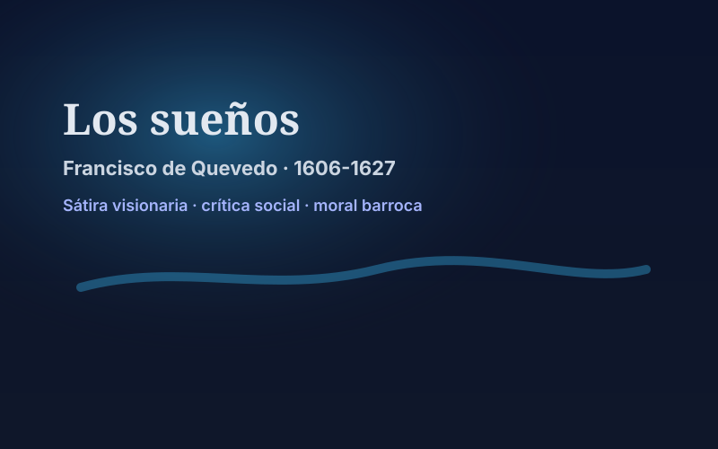

📚 Obras fundamentales del Barroco
El Barroco español produjo algunas de las obras más importantes de la literatura universal. Aquí presentamos las principales creaciones de Lope, Calderón, Góngora y Quevedo.
🎭 Teatro de Lope de Vega
Fuenteovejuna (c. 1612-1614)

Género: Drama histórico de honor colectivo
Tema: Rebelión de un pueblo contra el comendador tiránico
Argumento: El comendador Fernán Gómez de Guzmán abusa de su poder y deshonra a las mujeres de Fuenteovejuna. El pueblo se rebela y lo mata colectivamente. Cuando el rey envía un juez pesquisidor, todos responden al unísono: "Fuenteovejuna lo hizo".
Importancia:
- Conflicto entre poder feudal y justicia popular
- Defensa del honor campesino frente a la nobleza abusiva
- Unidad del pueblo como protagonista colectivo
- Lealtad al rey (poder legítimo) vs. tiranía del comendador
— Fuenteovejuna, señor.
— ¿Quién es Fuenteovejuna?
— Todo el pueblo a una."
El caballero de Olmedo (c. 1620-1625)

Género: Tragicomedia inspirada en un romance tradicional
Tema: Amor, honor y muerte trágica
Argumento: Don Alonso, el caballero de Olmedo, ama a doña Inés, pero su rival don Rodrigo, celoso, lo asesina en una emboscada. La obra mezcla comedia amorosa en la primera parte con tragedia inevitable en la segunda.
Importancia:
- Mezcla perfecta de comedia y tragedia
- Presagios de muerte (estructura de tragedia clásica)
- Romance popular como base del argumento
- Belleza lírica del lenguaje
al caballero,
la gala de Medina,
la flor de Olmedo."
Otras obras clave de Lope
- Peribáñez y el comendador de Ocaña: Drama de honor campesino
- El perro del hortelano: Comedia de enredo amoroso
- La dama boba: Comedia sobre el amor como educador
- El castigo sin venganza: Tragedia de honor conyugal
🌟 Teatro de Calderón de la Barca
La vida es sueño (1635)

Género: Drama filosófico
Tema: Libre albedrío vs. destino; apariencia vs. realidad
Argumento: El príncipe Segismundo ha sido encerrado desde su nacimiento por su padre, el rey Basilio, quien teme una profecía que anuncia que Segismundo será un tirano. Basilio decide darle una oportunidad: lo droga, lo lleva a palacio y observa su comportamiento. Segismundo, sin saber si está despierto o soñando, aprende a dominar sus instintos y elige el bien.
Importancia:
- Reflexión sobre el libre albedrío: el hombre puede vencer su destino
- Tema barroco del sueño/realidad: ¿Qué es real? ¿Qué es ilusión?
- Educación y dominio de las pasiones: Segismundo aprende a ser virtuoso
- Obra cumbre del teatro filosófico español
¿Qué es la vida? Una ilusión,
una sombra, una ficción,
y el mayor bien es pequeño;
que toda la vida es sueño,
y los sueños, sueños son."
El alcalde de Zalamea (c. 1640)

Género: Drama de honor
Tema: Honor del villano rico; justicia frente a privilegios militares
Argumento: El capitán don Álvaro viola a Isabel, hija del labrador Pedro Crespo, alcalde de Zalamea. A pesar de ser militar (fuero militar), Crespo lo juzga y ejecuta, defendiendo el honor de su hija. El rey Felipe II aprueba la decisión.
Importancia:
- Defensa de la dignidad del villano rico (honra universal)
- Conflicto entre jurisdicciones (civil vs. militar)
- La justicia por encima de los privilegios de clase
- Figura del rey como garante de la justicia
se ha de dar; pero el honor
es patrimonio del alma,
y el alma sólo es de Dios."
Otras obras clave de Calderón
- El gran teatro del mundo: Auto sacramental; alegoría de la vida como representación teatral
- La dama duende: Comedia de capa y espada con juegos de identidad
- El médico de su honra: Drama de honor conyugal extremo
- Autos sacramentales: Calderón escribió más de 80, llevando el género a su perfección
📜 Poesía de Luis de Góngora
Soledades (1613, inacabado)

Género: Poema culterano, silva (versos endecasílabos y heptasílabos)
Tema: Peregrinación de un náufrago por un paisaje idealizado
Argumento: Un joven náufrago llega a una costa y es acogido por pastores y cabreros. Góngora describe con lenguaje oscuro y culto la naturaleza, las bodas campesinas, las actividades rurales. El poema quedó inacabado (solo existen la Soledad primera y parte de la Soledad segunda).
Importancia:
- Cumbre del culteranismo
- Lenguaje oscuro, sintaxis latinizante, cultismos léxicos
- Metáforas complejas y referencias mitológicas constantes
- Belleza formal pura: "el arte por el arte"
- Obra que causó polémica inmediata; criticada por incomprensible
cuantos me dictó versos dulce musa:
en soledad confusa
perdidos unos, otros inspirados."
Fábula de Polifemo y Galatea (1612)

Género: Fábula mitológica en octavas reales
Tema: Amor del cíclope Polifemo por la ninfa Galatea
Argumento: Polifemo, el monstruoso cíclope, ama a la bella ninfa Galatea, quien ama al joven Acis. Polifemo, en un ataque de celos, mata a Acis aplastándolo con una roca. Los dioses transforman la sangre de Acis en un río.
Importancia:
- Transformación barroca del mito clásico
- Contraste entre belleza (Galatea) y monstruosidad (Polifemo)
- Lenguaje culterano en su máxima expresión
- Influencia de Ovidio (Metamorfosis)
Otras obras de Góngora
- Sonetos: Sobre temas variados (amorosos, burlescos, morales)
- Letrillas: Poemas satíricos y festivos ("Ande yo caliente...")
- Romances: Tono popular y burlesco
⚔️ Obra de Francisco de Quevedo
El Buscón (Historia de la vida del Buscón, llamado don Pablos) (1626)

Género: Novela picaresca
Tema: Ascenso social imposible; sátira despiadada de la sociedad
Argumento: Pablos, hijo de un ladrón y una bruja, intenta ascender socialmente mediante engaños y apariencias. Fracasa sistemáticamente y termina decidiendo irse a América, donde espera "mejorar de suerte", aunque el narrador advierte que le fue peor.
Importancia:
- Picaresca pesimista: a diferencia del Lazarillo, Pablos no aprende ni mejora
- Sátira social feroz: todos los estamentos son corruptos
- Lenguaje conceptista: juegos de palabras, ironía, agudeza
- Visión desengañada del mundo barroco
Los sueños (1606-1627)

Género: Prosa satírica y moral
Tema: Visión alegórica del infierno, la muerte, el juicio final
Contenido: Serie de visiones oníricas donde Quevedo critica todos los vicios de la sociedad: hipocresía, codicia, lujuria, soberbia. Incluye El sueño del Juicio Final, El alguacil endemoniado, El sueño del Infierno, etc.
Importancia:
- Sátira moral implacable
- Humor negro y grotesco
- Crítica universal: nadie se salva (nobles, clérigos, médicos, mujeres...)
Poesía de Quevedo
Quevedo escribió más de 875 poemas sobre todos los temas posibles:
- Poesía amorosa: Amor platónico, apasionado, metafísico ("Amor constante más allá de la muerte")
- Poesía moral y metafísica: Reflexión sobre el tiempo, la muerte, el desengaño ("Miré los muros de la patria mía...")
- Poesía satírica y burlesca: Ataques a Góngora, sátiras de costumbres ("Érase un hombre a una nariz pegado...")
- Poesía religiosa: Arrepentimiento, piedad, petición de perdón
sombra que me llevare el blanco día,
y podrá desatar esta alma mía
hora a su afán ansioso lisonjera;
mas no, de esotra parte, en la ribera,
dejará la memoria, en donde ardía:
nadar sabe mi llama la agua fría,
y perder el respeto a ley severa.
Alma a quien todo un dios prisión ha sido,
venas que humor a tanto fuego han dado,
medulas que han gloriosamente ardido,
su cuerpo dejará, no su cuidado;
serán ceniza, mas tendrá sentido;
polvo serán, mas polvo enamorado."
— Quevedo, "Amor constante más allá de la muerte"
🌟 Conclusión
Estas obras representan lo mejor del Siglo de Oro español. Desde el teatro popular de Lope hasta la reflexión filosófica de Calderón, desde la belleza oscura de Góngora hasta el ingenio mordaz de Quevedo, el Barroco exploró todos los registros posibles: la comedia y la tragedia, la belleza y la fealdad, el amor y la muerte, la fe y el desengaño.
Son obras que siguen siendo leídas, estudiadas y representadas cuatro siglos después, testimonio de su genialidad inmortal.